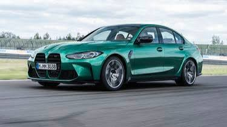
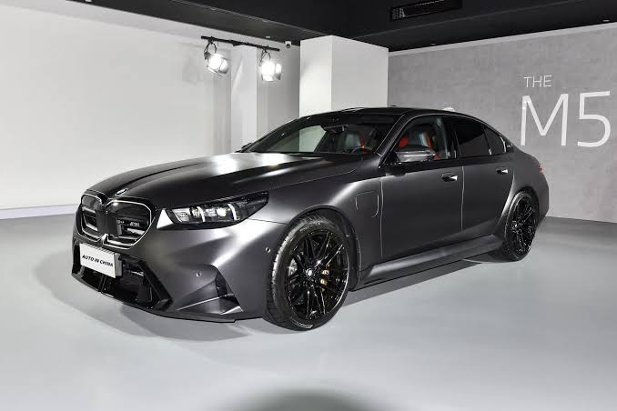
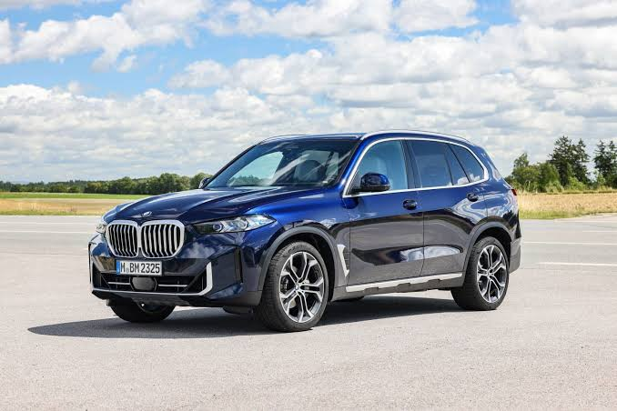
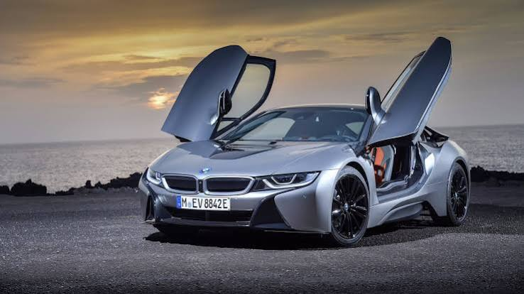
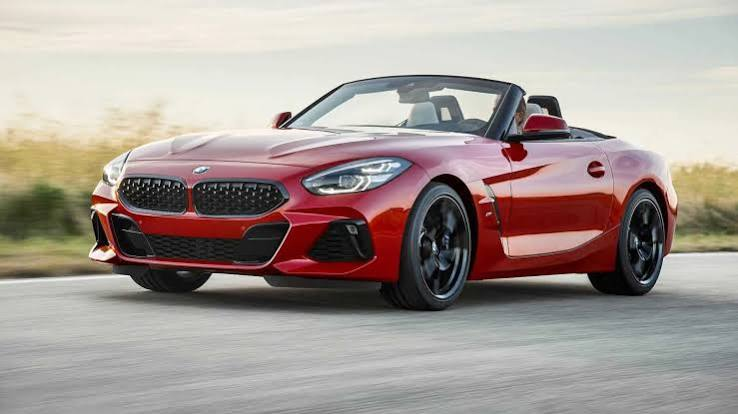

| Autos de BMW | |||
|---|---|---|---|
| Modelo | Categoria | Dato Destacado | Foto |
| Serie 3 | Sedán compacto premium | El "auto del pueblo" de BMW, referencia en manejo deportivo | |
| M3 | Sedán/coupe deportivo | Versión de alto rendimiento del Serie 3, ícono de la division M |  |
| Serie 5 | Sedán ejecutivo | Equilibrio entre lujo y deportividad | |
| M5 | Sedán de alto rendimiento | Versión más alta del serie 5, potencia bestial |  |
| X5 | SUV | El SUV que popularizó el segmento "SAV"(Sports Activity Vehicle) de BMW |  |
| Serie 7 | Sedán de lujo | Buque insigna de la marca |
|
| i8 | Deportivo híbrido | Diseño futurista, puertas mariposa |  |
| Z4 | Roadster | Descotable deportivo de dos plazas |  |